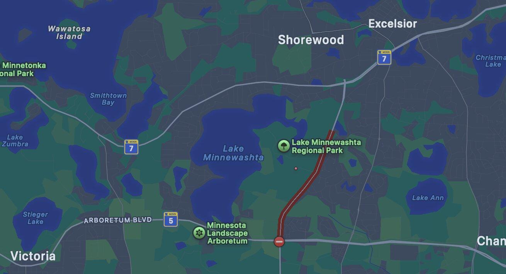
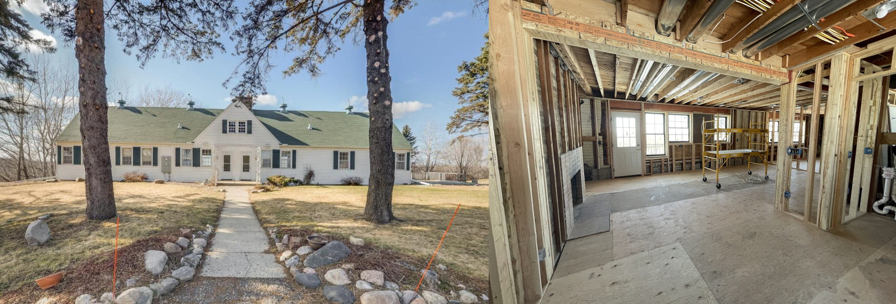
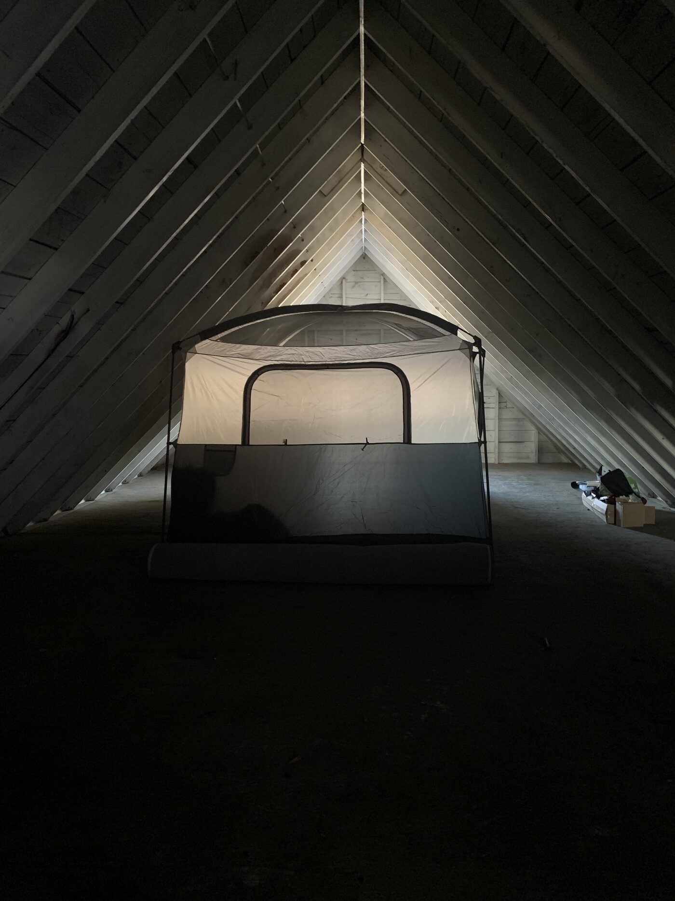
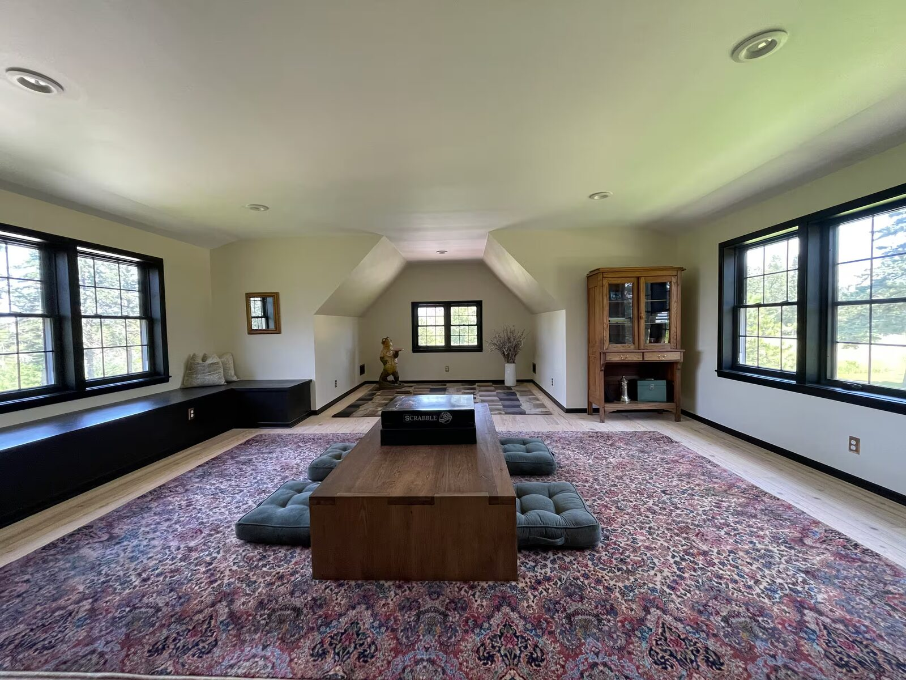
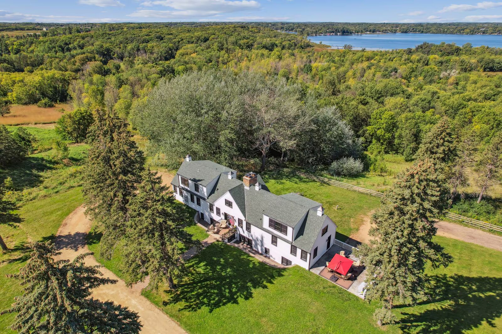
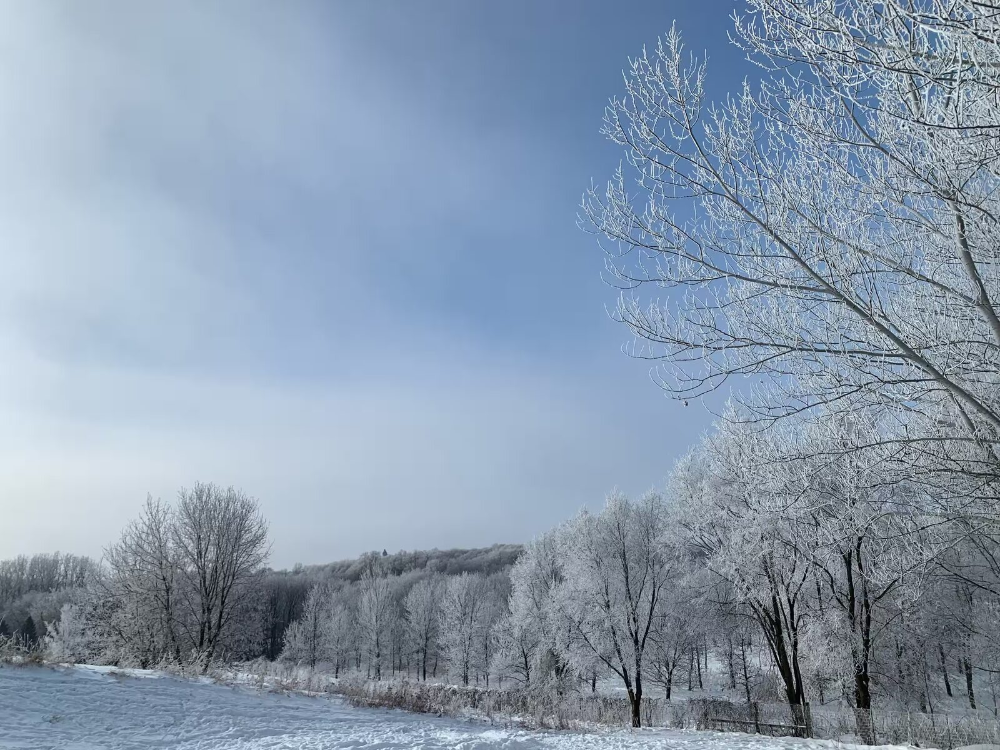
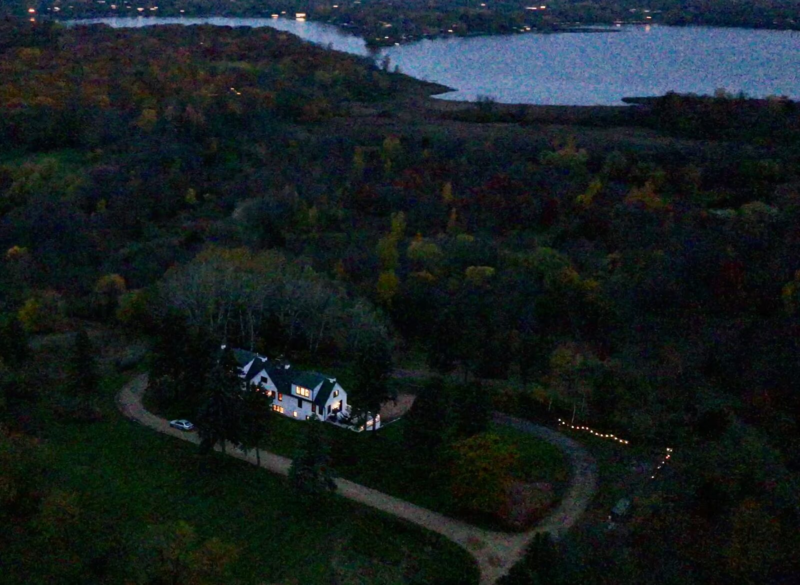
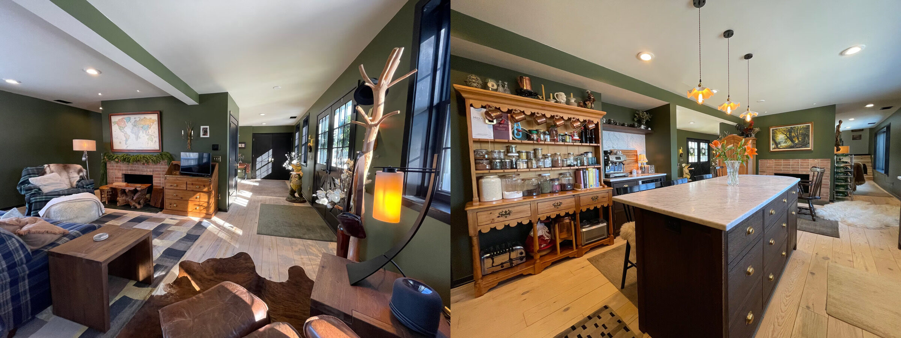

The short version
Ches Mar Farm is a small, tucked-away neighborhood of large-acreage homes on the east shore of Lake Minnewashta, inside Excelsior, Minnesota (55331), in Carver County. It borders Lake Minnewashta Regional Park — 340 acres of beach, trails, and woods.
There are only five homes in the whole Ches Mar Farm neighborhood, and the lots are enormous — they run from just under three acres to as much as fifteen. Ours is one of the smaller ones at about 2.38 acres, on the last gravel stretch, backed up against the park. It feels like open country. It is five minutes from downtown Excelsior.
You can experience it before you ever buy near it. Sabrina and I host two stays on our own property — Ches Mar Homestead — so you can wake up here, walk the park, and swim the lake before deciding this is home.

Most people who live around Lake Minnetonka have never heard of Ches Mar Farm, and that is exactly the point. It is one of those places you only find because you know someone on the road. So let me be that someone.
Twenty minutes, one question, and a gravel road
Before we had children, Sabrina and I were living in a condo in Edina. A condo is a fine way to live until the day it very much isn’t — until you start picturing a different kind of life and the walls seem to move in.
Then we walked this lot.
It was the absolute opposite of a condo — private, big, rolling, partly wooded. As we first walked up, sandhill cranes lifted off and flew right over us, and that was the moment I turned to Sabrina and asked her the only question that mattered: do you want to raise our children here? She said yes. We decided to buy the place within twenty minutes of standing on that ground. We wrote up the offer that same day and negotiated it — and once the purchase agreement was signed, we drove back late that night, just to stand on the land in the dark. The coyotes were right there in the backyard, close enough to raise the hair on your arms. We still hear them most nights — and these days we watch bald eagles over the property as often as cranes. It turns out that is what it sounds like, and looks like, when your backyard is a nature preserve.
The house was a dump (and then COVID hit)
What we actually bought, in the fall of 2019, was not a dream home. It was a run-down side-by-side duplex on 2.38 acres. Both units were empty when we found it, so as part of the purchase I negotiated to move a tenant into the south unit before we ever closed — which meant the property was generating income the day we took it over. If you take one practical thing from our story, take that one.

We moved into the north unit and started tearing it apart immediately. Out came all the drywall. Out came the old plaster. We were living inside a construction site — and then, because the main level wasn’t livable, we moved up into the attic, which had no windows, was unfinished, and was cold. There were no stairs to it. We climbed up on an Amsterdam staircase — a ship’s-ladder, the steep alternating-tread kind of stair they build into narrow canal houses when there’s no room for a real staircase.
It was an old farmhouse, and we had opened up every wall. So the mice came. To keep anything from getting into bed with us, we did the only sensible thing a person can do in that situation: we put our bed inside a tent, indoors, in the attic.

And then COVID happened, and turned everyone’s life upside down, ours included. We had started on the upstairs in the late fall; as winter came on and the world shut down, we had to move back into the gutted north unit — walls still open — because none of us knew what was coming next.
A tent, in an attic, up a ship’s ladder, in a farmhouse full of mice, in a pandemic. That was the beginning.
Here is where it turned. We had planned to keep it a left-right duplex, with both kitchens down in the walkout lower level. My good friend and mentor Andrejs Vape — a real estate investor who has owned a lot of units — looked at it and said: don’t. Make it a house on top of a condo. Combine the two lower levels into one connected unit. Then, on the main level, because there was a central chimney between the two old units, simply open it up so you can walk all the way around your own fireplace. It was a great idea. It is still, to this day, the best feature of our home.
The design and build was done by TreHus — now TreHus Architects + Interior Designers + Builders, a firm known for beautiful renovations of older homes. There was history between us: I’d sold their original headquarters off East Lake Street in Minneapolis years before, and later helped them into their current home in Golden Valley. The scope was not small: to bring light into this reworked house we added or replaced a total of 78 windows. The lower-level unit was built out by Jarod Blackowiak, who now runs Abode Construction and builds beautiful homes — we were essentially his first project, and I’m grateful for it.
None of this was easy, and I won’t pretend it was. But a hard-won home is a different thing than a bought one. We know every wall in this place because we took most of them out ourselves.

Who were Chester and Margaret?
It was only after we’d landed here that we learned where the name comes from. The neighborhood, and the roads through it, carry the name Ches Mar — and, as the story is told around here, that name is a stitching-together of two people: Chester and Margaret.
Chester, so the story goes, was an attorney, and this whole area was essentially his gentleman’s hobby farm — a working country estate of the kind that once ringed these lakes. Our particular corner was, of all things, the chicken coop. And here is the part that still stops me: much of what is now Lake Minnewashta Regional Park is said to have once been his cornfields. When I look out into that park — 340 acres of preserved woods and shoreline — I’m looking at what used to be one man’s farm.
That fits the history of this whole region. The land around Lake Minnetonka and Lake Minnewashta was dotted with gentleman’s farms and hobby estates through the mid-1900s — grand country places owned by prominent Minneapolis families who wanted acreage, animals, and a little rural prestige within reach of the city. Ches Mar was one of them, and its bones are still here in the road names and the lot sizes.
(I’m telling the Chester-and-Margaret story the way it was passed to us — as neighborhood history. If you have documentation of the Ches Mar family’s story, I would genuinely love to see it and get it exactly right.)
The neighborhood itself: acreage, gravel, and two doors down
What makes Ches Mar Farm unusual is simple: space. This close to Lake Minnetonka, land is carved thin. Here it wasn’t. Every home in the neighborhood sits on a big lot — they run from just under three acres to as much as fifteen — and there are only five homes in the whole neighborhood to begin with. I’m the last one on a gravel road, which means that even inside the city of Excelsior, it feels like the country: trees, quiet, wildlife, dark skies, and the sounds of that park at night.

Because the lots are big and the homes are few, they rarely change hands — and when they do, the numbers tell you what that space is worth. A home on our road sold in 2024 for about $1.23 million — a 1940s farmhouse on two and a half acres — and others sit on far more land than that. This is not a starter-home street. It’s a keep-it-for-decades street.
And yet the best thing about it isn’t the acreage. Two houses away live our friends Adam and Alisa Moen. Alisa is a creative who runs Undone Studio; Adam is a healthcare-analytics executive at Optum (part of UnitedHealth Group); and they host a small, much-loved stay of their own here, the Ches Mar Garden Flat. In a neighborhood with this few homes, having close friends two doors down isn’t a small thing — it’s a near-impossible thing. One of the great moments of my life so far has been watching my daughter walk, on her own two feet, down to our friends’ home. That is what a neighborhood is supposed to be. Most people spend a lifetime trying to buy their way into it. We stumbled into it up a gravel road.
The other thing about this place is that it holds onto people. The plumbers who worked on our home actually grew up in it years ago — when they realized whose house they were standing in, they asked if they could look around, and of course we said yes. It turns out several people who were raised in this neighborhood have found their way back, and some have even booked our Airbnbs just to sleep again under the roofs they grew up near. A place people leave and keep coming home to is telling you something. We felt it the first day, and we feel it every time someone returns.
Your backyard is a 340-acre park
The reason this neighborhood feels the way it does is the thing pressed right up against it: Lake Minnewashta Regional Park, a Carver County park of about 340 acres on the lake’s east side. It is not a token strip of grass. It is a real, four-season park, and it is functionally our backyard.
What’s in it:
- A swimming beach on Lake Minnewashta — clean, shallow, lifeguarded in season, and genuinely beautiful in summer
- A hardwood forest of towering oaks and restored prairie, with the Lake Trail and the Woodlands Loop winding through it
- About 5 miles of trails in all, paved and natural-surface
- A fenced 18-acre off-leash dog area, with separate sections for big and small dogs and its own mile of trails
- A paved boat launch and a fishing pier
- Four reservable picnic shelters, sand and turf volleyball, and a creative playground
- Groomed cross-country ski and snowshoe trails all winter
In summer we walk to the beach. In winter, our kids slide down the hills in that park until their cheeks are raw. There’s a version of Minnesota that people who don’t live here never quite believe: that the same place can be a swimming lake in July and a ski trail in January, and that you can have both of them a short walk from your own door. This is that place.
And because our shore faces west, the evenings are the quiet showstopper. Late on a September day the sun drops over the water, the sky turns to color, and the whole lake goes still — the kind of thing you stop the car for, except you’re already home.

The company we keep on the lake
Ches Mar Farm isn’t the only thing tucked around Lake Minnewashta. Follow the shore and you pass a small constellation of places that have been here longer than any of us. Just north of Tanadoona Drive sits Camp Tanadoona, the wooded lakeside camp that Camp Fire Minnesota has run since 1924 — where generations of Minnesota kids have learned to paddle a canoe and build a fire. A few minutes south is Westwood Community Church, one of the largest congregations in the west metro. And a little farther on is the Minnesota Landscape Arboretum, the University of Minnesota’s renowned public garden. This quiet pocket of Excelsior has been a place people come to — for camp, for worship, for the gardens — for a hundred years. (Tanadoona deserves a story of its own, and we’ll give it one another day.)
Why Excelsior — the village at the end of the gravel
Here is the trick of this neighborhood: you get all that country, and you are still a few minutes from downtown Excelsior. Excelsior is a true lake village — one square mile of Victorian porches and huge old oaks, a walkable Water Street of brick storefronts and awnings, restaurants, the Commons and the beach on Lake Minnetonka, the summer boats, the winter quiet. It is the kind of small downtown people drive an hour to spend a Saturday in. We get to treat it as ours.
So the day divides beautifully. Morning on two wooded acres with the cranes. An afternoon at the Minnewashta beach. An evening walking Water Street for dinner and — if you ask my kids — the best ice cream in Excelsior. Rural and village, in the same afternoon, without a highway in between. That combination is rare anywhere. On the west side of the Twin Cities, on a good lake, next to a great park, it is almost unheard of.
One honest, practical note for anyone shopping the area: this pocket sits right on the Excelsior–Chanhassen edge in Carver County. The mailing city is Excelsior (55331); the park’s main entrance is addressed in Chanhassen. City lines and county parcels can shift lot to lot around here, so for any specific home it’s worth confirming the exact city and county — which I’m glad to do.
Schools: the question buyers ask first
Here is what makes this pocket unusually good for families: you get options. On the public side, homes around here are served by one of Minnesota’s top-rated districts, Minnetonka Public Schools (District 276) — Minnetonka Middle School West sits right by the neighborhood — while parcels on the Chanhassen side of the line fall into the equally strong Eastern Carver County Schools (District 112). Which one a given home lands in is genuinely parcel-by-parcel, so I’ll confirm the exact district and assigned schools for any address you’re considering.
Then there is the private side — and honestly, it’s part of why a lot of families choose this area in the first place. Within about ten to fifteen minutes you have a real cluster of well-regarded schools: St. Hubert Catholic School (K–8) and the classical Christian Chapel Hill Academy (Jr.K–8), both in Chanhassen; Holy Family Catholic High School in Victoria; and Southwest Christian High School in Chaska. Public or private, the options are already here — living in this neighborhood means you get to choose, not commute across the metro to have the choice.
Come stay before you live here: Ches Mar Homestead
We love this neighborhood so much that we decided to share it. Our home — that same duplex we gutted — is now Ches Mar Homestead, and both halves of it are stays you can book. It’s the best way I know to feel a place before you make it yours: sleep here, walk the park at dawn, swim the lake, hear the coyotes, and see whether it feels like home. Sabrina runs it as a Superhost, and our guests have come from all over the world — we recently hosted golfers in town for the women’s PGA Tour, from Korea and Thailand, some of the best players on earth.


The Woodland Lodge
The upper level of the homestead — light-filled, wooded views, the walk-around fireplace, sleeps four.
View on AirbnbThe Tranquil Nature Retreat
The walkout lower level — private, quiet, steps from the park, sleeps five. One of the most-loved stays in the area.
View on AirbnbIf you’re weighing a move to the Excelsior or Lake Minnewashta area from out of state, this is genuinely the smartest first step: stay a few nights on Ches Mar Farm, and let the neighborhood make its own case. It made ours in twenty minutes.
Questions people ask
Where is Ches Mar Farm?
It’s a small enclave of large-acreage homes on the east shore of Lake Minnewashta, inside Excelsior (ZIP 55331) in Carver County, Minnesota — directly beside Lake Minnewashta Regional Park. The streets carry the Ches Mar name.
Is Ches Mar Farm in Excelsior or Chanhassen?
The mailing address is Excelsior, 55331. The parcels sit in Carver County on the Excelsior–Chanhassen edge, and the park’s main entrance is addressed in Chanhassen. City lines, parcel, and school boundary can differ lot by lot, so confirm them for any specific address — I’m glad to.
How big are the lots?
Unusually large for how close this is to Lake Minnetonka. Lots here run from just under three acres to as much as fifteen; ours is about 2.38 acres. That scale, plus the bordering regional park, is why it feels rural even inside a city.
What schools serve the area?
Public homes here are generally served by Minnetonka Public Schools (District 276), one of Minnesota’s top-rated districts, with parcels near the Chanhassen line in Eastern Carver County Schools (District 112). Close private options (about 10–15 minutes) include St. Hubert Catholic School and Chapel Hill Academy in Chanhassen, Holy Family Catholic High School in Victoria, and Southwest Christian High School in Chaska. I’ll confirm the exact public district for any address.
What is Lake Minnewashta Regional Park?
A 340-acre Carver County regional park on Lake Minnewashta with a swimming beach, about 5 miles of trails, a paved boat launch and fishing pier, a fenced 18-acre off-leash dog area, four reservable picnic shelters, a playground, and groomed cross-country ski and snowshoe trails in winter.
Can you swim and bring a dog to the park?
Yes — there’s a designated swimming beach in summer and a fenced 18-acre off-leash dog area with separate large- and small-dog sections and about a mile of dog trails.
Who were Chester and Margaret?
As the neighborhood’s story is told, “Ches Mar” combines Chester and Margaret, whose gentleman’s hobby farm once spread across this land — and much of what is now Lake Minnewashta Regional Park is said to have been their fields. It’s local history; documentation is welcome.
Can I stay on Ches Mar Farm before buying in the area?
Yes. Sabrina and I host two Superhost stays on our own property, Ches Mar Homestead: The Woodland Lodge (the upper home) and The Tranquil Nature Retreat (the walkout lower level) — a way to experience the neighborhood, the park, and the lake before you commit.
Do homes here come up for sale often?
Rarely. It’s just five tightly held acreage homes, so listings are infrequent, and a home on the road sold in 2024 for about $1.23 million. If you want to be told when one may come available, call me at 952-258-3100.
If you love it too
Stay on Ches Mar Farm
Book The Woodland Lodge or The Tranquil Nature Retreat at Ches Mar Homestead and feel the neighborhood for yourself — the park, the lake, the quiet. See both stays.
Lake Minnewashta Regional Park
Carver County Parks · 6900 Hazeltine Blvd, Chanhassen · beach, trails, off-leash dog area, boat launch, winter skiing. Open daily.
Geoffrey Serdar — Serdar+Partners at Compass
952-258-3100. I live on this road. If you’re thinking about the Excelsior or Lake Minnewashta area — this neighborhood or any other — call me and I’ll tell you the truth about it, including the parts a listing never mentions.
This guide is a personal account and local information only. Park details are from Carver County as of July 2026 and can change — confirm current hours, fees, and rules with the county. Historical details about the Ches Mar family are shared as local lore. Market figures are from publicly available sources as of 2026 and change.